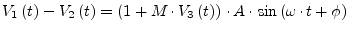
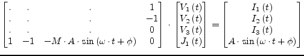
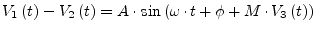
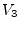
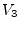
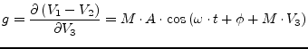
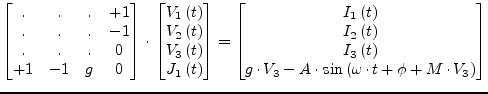

An AC voltage source in the time-domain is characterized by its
frequency  , the initial phase
, the initial phase  and the amplitude
and the amplitude  . During
amplitude modulation the modulation level
. During
amplitude modulation the modulation level  must be considered. The
output voltage of the source is determined by the following equation.
must be considered. The
output voltage of the source is determined by the following equation.
|  | (6.103) |
The appropriate MNA matrix entries during the transient analysis decribing a simple linear operation can be written as
|  | (6.104) |
The phase modulated AC source is also characterized by the frequency
 , the amplidude
, the amplidude  and by an initial phase
and by an initial phase  . The output
voltage in the time-domain is determinded by the following equation
. The output
voltage in the time-domain is determinded by the following equation
|  | (6.105) |
whereas  denotes the modulation index and  the modulating
voltage.
denotes the modulation index and  the modulating
voltage.
The component is non-linear in the frequency- as well in the time-domain. In order to prepare the source for subsequent Newton-Raphson iterations the derivative
|  | (6.106) |
is required. With this at hand the MNA matrix entries of the PM modulated AC voltage source during the transient analysis can be written as
|  | (6.107) |